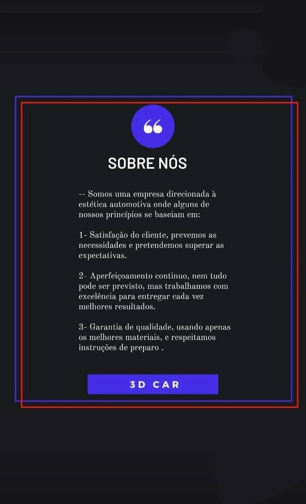

Funilaria e Pintura 3D CAR
Excelência em reparos automotivos
Eis o que oferecemos com extremo zelo:


Recuperação dos Babys...

Galeria de Serviços Reais
🚗 Funilaria e Pintura 3D CAR
Excelência em reparos, estética e cuidado automotivo
Com mais de 13 anos de experiência, a 3D CAR se tornou referência em funilaria, pintura e estética automotiva na zona norte de São Paulo. Nossa missão é entregar não apenas serviços, mas confiança, segurança e valorização para cada cliente e cada veÃculo que passa por nossas mãos.
ğŸ› ï¸ Serviços Técnicos e Recuperações
Na 3D CAR, cada reparo é feito com precisão e responsabilidade. Utilizamos técnicas modernas e equipamentos profissionais para garantir resultados duradouros e acabamento impecável.
🔧 Funilaria e Lanternagem
Corrigimos amassados, distorções e danos estruturais com tecnologia Spotter e técnicas de remoldagem que respeitam a integridade do veÃculo.
🛠Recuperação de Para-choques e Rodas
Soldamos plásticos trincados e restauramos rodas riscadas com pintura personalizada, devolvendo resistência e estilo ao seu carro.
🨠Pintura Automotiva Profissional
A pintura é feita com materiais de alta qualidade, cabine pressurizada e atenção aos detalhes. Seja para retoques ou pintura completa, garantimos uniformidade, brilho e proteção.
- Pintura técnica com acabamento profissional
- Personalização de peças e rodas
- Correção de imperfeições e tonalidade original
✨ Estética Automotiva: Cuidado que Transforma
Mais do que aparência, oferecemos tratamentos que protegem e valorizam seu carro por dentro e por fora.
- Polimento Comercial: revitaliza o brilho da pintura com proteção de até 90 dias.
- Polimento Técnico: remove microrriscos e oferece proteção por até 180 dias.
- Higienização Interna: limpeza profunda com ação germicida, eliminando fungos, ácaros e bactérias.
🧼 Detalhamento e Proteção
Cada detalhe é tratado com cuidado técnico e acabamento refinado:
- Polimento e proteção de faróis
- Restauração de plásticos externos
- Lavagem e proteção de motor com verniz
- Lavagem detalhada de rodas (com remoção)
- Descontaminação e cristalização de vidros
💬 Atendimento Personalizado e Orçamento Justo
Aqui, você fala direto com quem executa. Explicamos cada etapa do serviço, mostramos fotos reais dos processos e oferecemos orçamentos transparentes e personalizados.
Você pode nos chamar pelo WhatsApp, visitar nossa oficina ou acompanhar os bastidores pelo Instagram — onde mostramos o dia a dia dos serviços com clareza e autenticidade.
📠Localização e Contato
Endereço: Rua Padre João Gualberto, 440A – Imirim, São Paulo – SP
Telefone: (11) 97402-6145
Instagram: @_oficina3d
WhatsApp: Fale conosco
🔥
Quem somos e o que representamos:

Contato
Telefone: (11) 97402 - 6145
📠Fale conosco pelo WhatsAppInstagram: @_OFICINA3D
📷 Siga-nos no Instagram